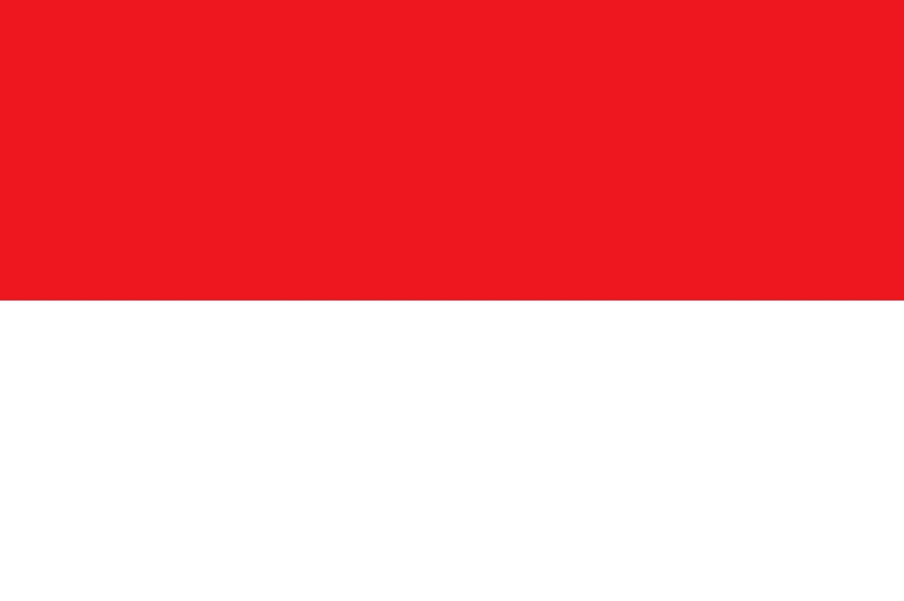

Perjalanan Joko Widodo
 Perjalanan Hidup Joko Widodo
Masa kecil dan keluarga
Joko Widodo lahir dari pasangan Widjiatno Notomihardjo dan Sudjiatmi. Ia merupakan anak sulung dan putra satu-satunya dari empat bersaudara. Ia memiliki tiga orang adik perempuan bernama Iit Sriyantini, Ida Yati, dan Titik Relawati. Ia sebenarnya memiliki seorang adik laki-laki bernama Joko Lukito, tetapi meninggal saat persalinan. Sebelum berganti nama, Joko Widodo memiliki nama kecil Mulyono. Ayahnya berasal dari Karanganyar, sementara kakek dan neneknya berasal dari sebuah desa di Boyolali. Pendidikannya diawali dengan masuk SD Negeri 112 Tirtoyoso yang dikenal sebagai sekolah untuk kalangan menengah ke bawah.
Dengan kesulitan hidup yang dialami, ia terpaksa berdagang, mengojek payung, dan menjadi kuli panggul untuk membiayai sendiri keperluan sekolah dan uang jajan sehari-hari. Saat anak-anak lain ke sekolah dengan sepeda, ia memilih untuk tetap berjalan kaki. Mewarisi keahlian bertukang kayu dari ayahnya, ia mulai bekerja sebagai penggergaji di umur 12 tahun. Jokowi kecil telah mengalami penggusuran rumah sebanyak tiga kali. Penggusuran yang dialaminya sebanyak tiga kali pada masa kecil mempengaruhi cara berpikirnya dan kepemimpinannya kelak setelah menjadi Wali Kota Surakarta saat harus menertibkan permukiman warga.
Setelah lulus SD, ia kemudian melanjutkan pendidikan di SMP Negeri 1 Surakarta. Ketika ia lulus SMP, ia sempat ingin masuk ke SMA Negeri 1 Surakarta, namun gagal sehingga pada akhirnya ia masuk ke SMA Negeri 6 Surakarta. Jokowi menikah dengan Iriana di Surakarta pada 24 Desember 1986, dan memiliki 3 orang anak, yaitu Gibran Rakabuming Raka (1987), Kahiyang Ayu (1991), dan Kaesang Pangarep (1994).
Masa kuliah dan berwirausaha
 Dengan kemampuan akademis yang dimiliki, ia diterima di Jurusan Kehutanan, Fakultas Kehutanan Universitas Gajah Mada. Kesempatan ini dimanfaatkannya untuk belajar struktur kayu, pemanfaatan, dan teknologinya. Ia berhasil menyelesaikan pendidikannya dengan judul skripsi "Studi tentang Pola Konsumsi Kayu Lapis pada Pemakaian Akhir di Kodya Surakarta" dan dengan gelar Insinyur (Ir.). Selain kuliah, ia juga tercatat aktif sebagai anggota Mapala Silvagama, unit kegiatan mahasiswa pecinta alam di fakultasnya.[butuh rujukan]
Setelah lulus pada 1985, ia bekerja di BUMN PT Kertas Kraft Aceh, dan ditempatkan di area Hutan Pinus Merkusii di Dataran Tinggi Gayo, Aceh Tengah. Namun ia merasa tidak betah dan pulang menyusul istrinya yang sedang hamil tujuh bulan. Ia bertekad berbisnis di bidang kayu dan bekerja di usaha milik pamannya, Miyono, di bawah bendera CV Roda Jati. Pada tahun 1988, ia memberanikan diri membuka usaha sendiri dengan nama CV Rakabu, yang diambil dari nama anak pertamanya. Usahanya sempat berjaya dan juga naik turun karena tertipu pesanan yang akhirnya tidak dibayar. Namun pada tahun 1990 ia bangkit kembali dengan pinjaman modal Rp30 juta yang ia peroleh dari Ibunya.[27]
Usaha ini membawanya bertemu Bernard Chene, seorang pria berkebangsaan Prancis, yang akhirnya memberinya panggilan yang populer hingga kini, "Jokowi". Dengan kejujuran dan kerja kerasnya, ia mendapat kepercayaan dan bisa berkeliling Eropa yang membuka matanya. Pengaturan kota yang baik di Eropa menjadi inspirasinya untuk diterapkan di Solo dan menginspirasinya untuk memasuki dunia politik. Ia ingin menerapkan kepemimpinan manusiawi dan mewujudkan kota yang bersahabat untuk penghuninya yaitu daerah Surakarta.
Dengan kemampuan akademis yang dimiliki, ia diterima di Jurusan Kehutanan, Fakultas Kehutanan Universitas Gajah Mada. Kesempatan ini dimanfaatkannya untuk belajar struktur kayu, pemanfaatan, dan teknologinya. Ia berhasil menyelesaikan pendidikannya dengan judul skripsi "Studi tentang Pola Konsumsi Kayu Lapis pada Pemakaian Akhir di Kodya Surakarta" dan dengan gelar Insinyur (Ir.). Selain kuliah, ia juga tercatat aktif sebagai anggota Mapala Silvagama, unit kegiatan mahasiswa pecinta alam di fakultasnya.[butuh rujukan]
Setelah lulus pada 1985, ia bekerja di BUMN PT Kertas Kraft Aceh, dan ditempatkan di area Hutan Pinus Merkusii di Dataran Tinggi Gayo, Aceh Tengah. Namun ia merasa tidak betah dan pulang menyusul istrinya yang sedang hamil tujuh bulan. Ia bertekad berbisnis di bidang kayu dan bekerja di usaha milik pamannya, Miyono, di bawah bendera CV Roda Jati. Pada tahun 1988, ia memberanikan diri membuka usaha sendiri dengan nama CV Rakabu, yang diambil dari nama anak pertamanya. Usahanya sempat berjaya dan juga naik turun karena tertipu pesanan yang akhirnya tidak dibayar. Namun pada tahun 1990 ia bangkit kembali dengan pinjaman modal Rp30 juta yang ia peroleh dari Ibunya.[27]
Usaha ini membawanya bertemu Bernard Chene, seorang pria berkebangsaan Prancis, yang akhirnya memberinya panggilan yang populer hingga kini, "Jokowi". Dengan kejujuran dan kerja kerasnya, ia mendapat kepercayaan dan bisa berkeliling Eropa yang membuka matanya. Pengaturan kota yang baik di Eropa menjadi inspirasinya untuk diterapkan di Solo dan menginspirasinya untuk memasuki dunia politik. Ia ingin menerapkan kepemimpinan manusiawi dan mewujudkan kota yang bersahabat untuk penghuninya yaitu daerah Surakarta.